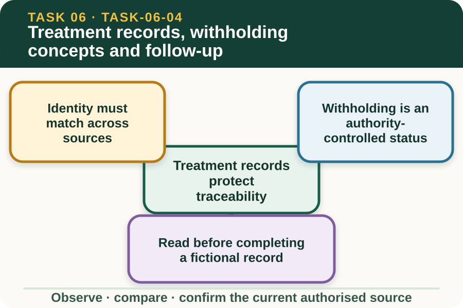

Learning purpose
Read and complete a fictional record while recognising that the authorised source controls every treatment detail.
Task 6 · Lesson 4 of 4
Read and complete a fictional record while recognising that the authorised source controls every treatment detail.
Learning purpose
Read and complete a fictional record while recognising that the authorised source controls every treatment detail.
Success criteria
Learning boundary
Supplementary learning and formative practice only. Current RTO assessment, local procedures and authorised supervision control real work.

A livestock treatment record connects an identified animal or group with the authorised direction, product identity, treatment event, responsible person and required follow-up fields. It allows later decisions to use evidence rather than memory.
Learners may practise reading the structure with fictional data. Real entries must be completed only within current workplace authority, product information, veterinary direction and enterprise record procedures.
Traceability requires the animal or group identifier to match the authorised direction and enterprise record. Product identity also needs to match the approved source, including batch and expiry details where the workplace requires them.
A mismatch is not corrected by selecting the closest-looking value. Preserve the conflict and refer it before the record is used to support any livestock, sale or food-chain decision.
A withholding requirement is a controlled restriction connected to the approved product use, livestock or product destination and current authoritative information. It must never be recalled from an old classroom example or estimated.
The learner's record-literacy task is to locate the controlling source and confirm that the authorised status is entered consistently. This site provides no withholding number, calculation or release decision.
A record audit compares required fields, authorised direction and source identity before accepting an entry as complete. Blank, conflicting or illegible fields are marked for review rather than reconstructed from assumption.
Good records distinguish who directed, who carried out authorised work, who recorded it and who reviewed it. Those roles may differ, so each signature or confirmation field must follow the current enterprise process.
Fictional worked example
Record evidence: In a fictional classroom record for animal group F12, the authorised direction names Product PX-4 and batch B318, while the event entry says PX-4 and batch B381. The withholding-status field is blank. Decision and reason: Kai cannot decide which batch is correct or infer any release date. Safe action: He circles both discrepancies and refers the record to the authorised supervisor. Result: The supervisor checks the current product and enterprise sources. Next check or record: Kai enters only the confirmed correction and source reference, with no invented dosage or withholding number.
Post-treatment monitoring records authorised observation fields, times and changes. An observer can state what is different from the previous entry, but should not declare effectiveness or recovery unless the authorised reviewer confirms that conclusion.
Unexpected or worsening observations are reported through the current livestock welfare pathway. The site does not provide response instructions, clinical thresholds, treatment alternatives or any independent livestock-care decision.
Real treatment records can contain enterprise, veterinary, product and food-chain information. They belong in approved systems with the access, correction, retention and reporting rules set by the workplace and relevant authorities.
Do not copy real records or assessor materials into a device-local website field. Completing this fictional exercise supports record literacy only and does not establish practical performance or competence.
Formative practice
Each option explains the consequence. These answers save only on this device.
Written application
Apply and keep a learning record
Compare a fictional authorised direction, event entry and follow-up note. Mark matching fields, unresolved conflicts and the current source needed for each decision. Do not calculate dosage or withholding and do not recommend treatment.
Learning record: A supplementary treatment-record audit showing traceability, source control and authorised-review points.
Lesson responses and the activity are formative learning only. Formal sufficiency and competence remain with the current RTO process.
Next: return to the task hub and follow the teacher-confirmed assessment direction.
Source basis: AHCLSK222 Release 1 treatment-record, batch, expiry, monitoring and reporting requirements, interpreted only as record literacy. Current veterinary direction, product information, workplace procedures and authorised personnel control all treatment, dosage, withholding and follow-up decisions.